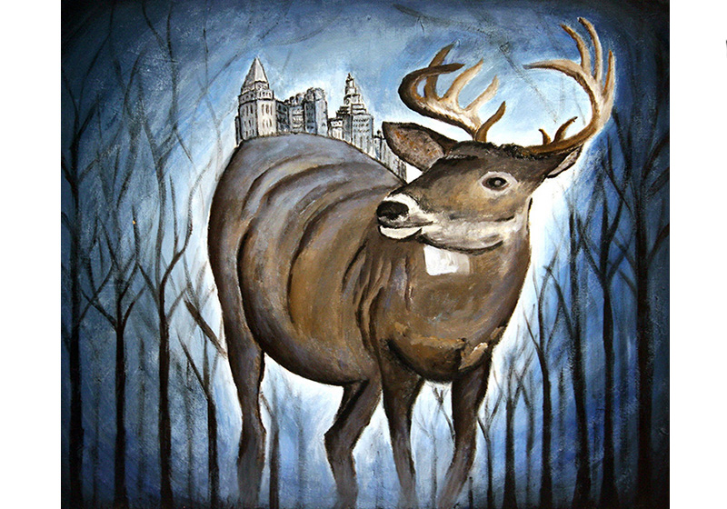
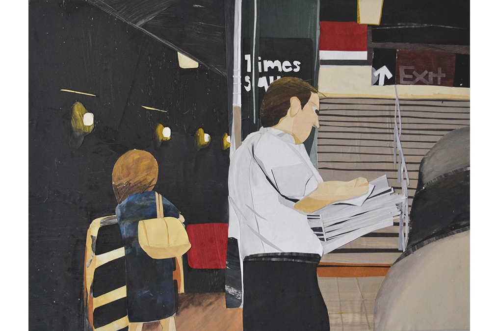
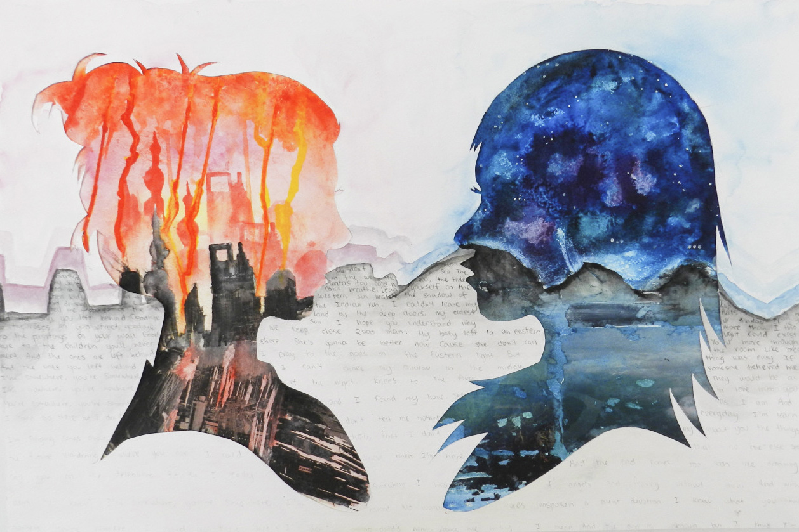
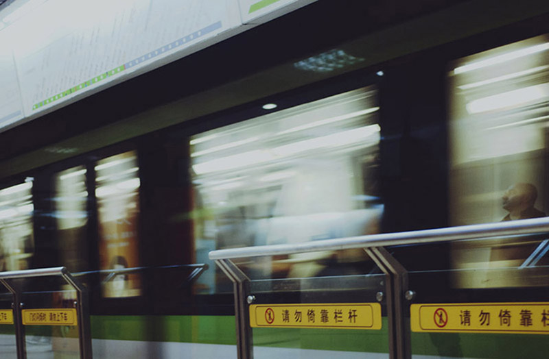
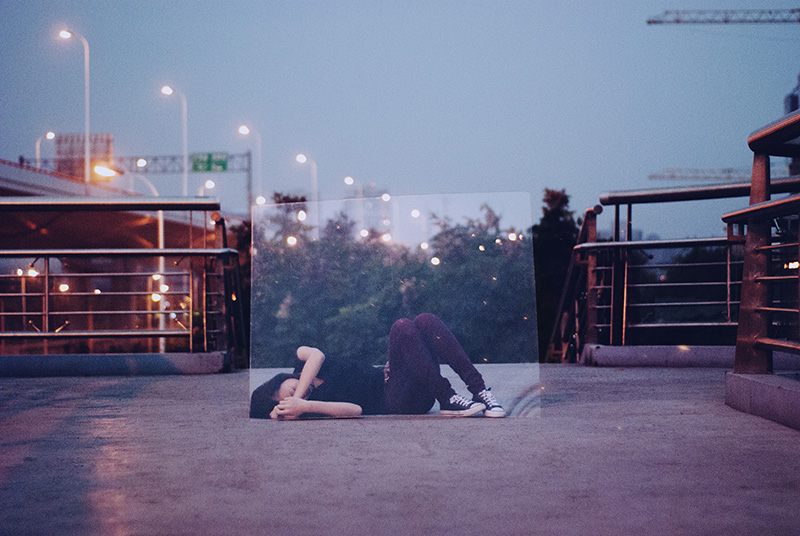
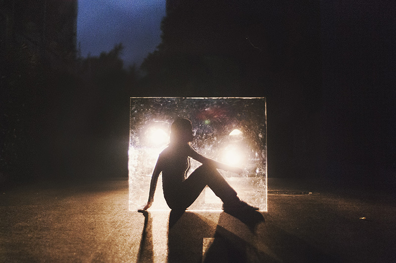
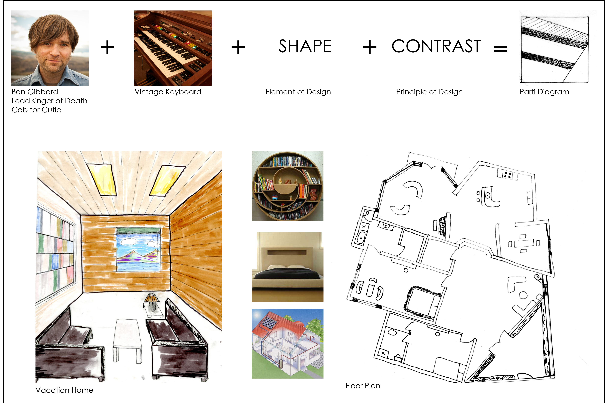

"Oh Deer" / acrylic painting
 "Times Square" / Acrylic painted collage
"Wanderlust" / mixed medium piece made of watercolor and photo transferred images
"Quintessential I" / photograph
"Eternal Restriction I" / photograph
"Eternal Restriction II" / photograph
Architectural Study
«»
These pieces of art are miscellaneous pieces of artwork featuring a variety of media relating to the influence of environments.
With my artwork, I've explored the idea of different environments and both my own and other people's interaction with their "homes", while tending to convey a sense of both isolation and feeling lost. Throughout my life, I have lived in a myriad of environments, including rural and urban environments, and this has complicated my own idea of home. I want to express my own inability to find my way back home and portray different environments and their influence on my personal development as well as the connection between people and their surroundings.
In particular, this collection is a collection of my best two-dimensional artwork, and have a strong focus on the contrast between urban and rural environments.